Suivez ce guide étape par étape pour installer l'application sur votre smartphone, configurer votre compte et administrer votre unité en toute simplicité.
Ajoutez Azimut sur votre écran d'accueil pour y accéder en un seul clic, comme une vraie application !
Ouvrez le navigateur Safari et allez sur le site azimut-app.be
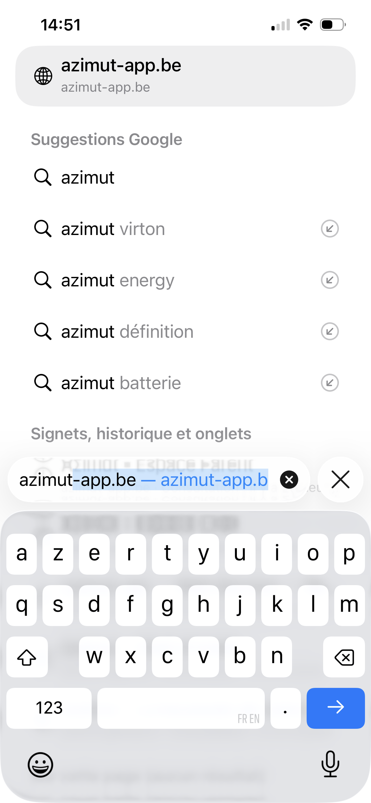
Appuyez sur l'icône Partager tout en bas de votre écran.
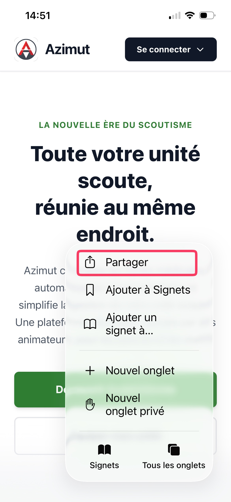
Un menu s'ouvre. Faites-le glisser vers le haut pour voir plus d'options.
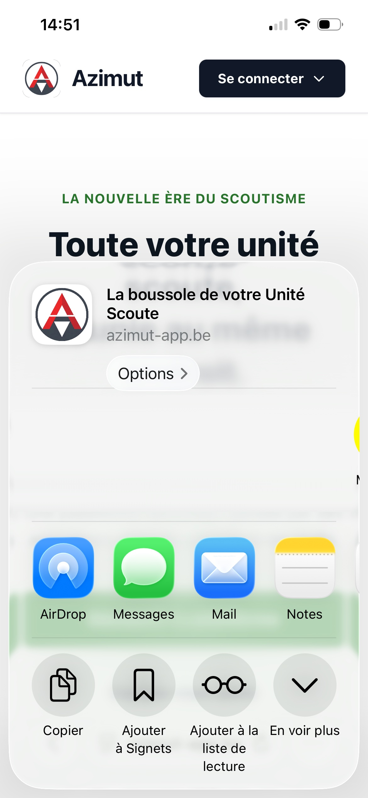
Appuyez sur l'option "Sur l'écran d'accueil" (icône +).
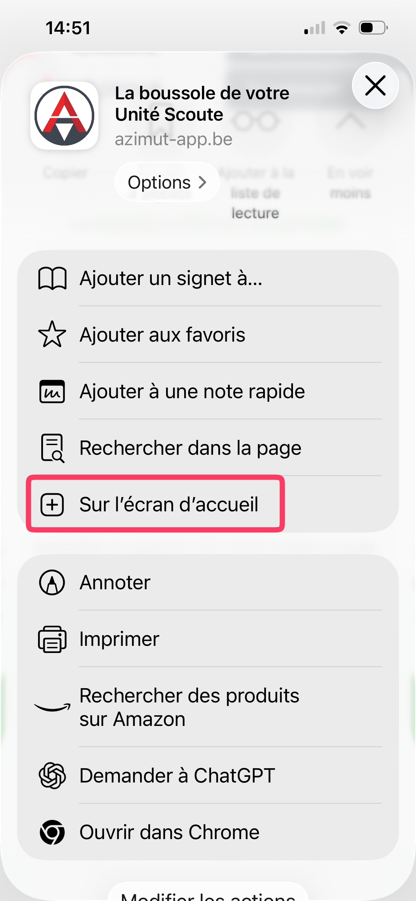
Confirmez en appuyant sur "Ajouter" en haut à droite.
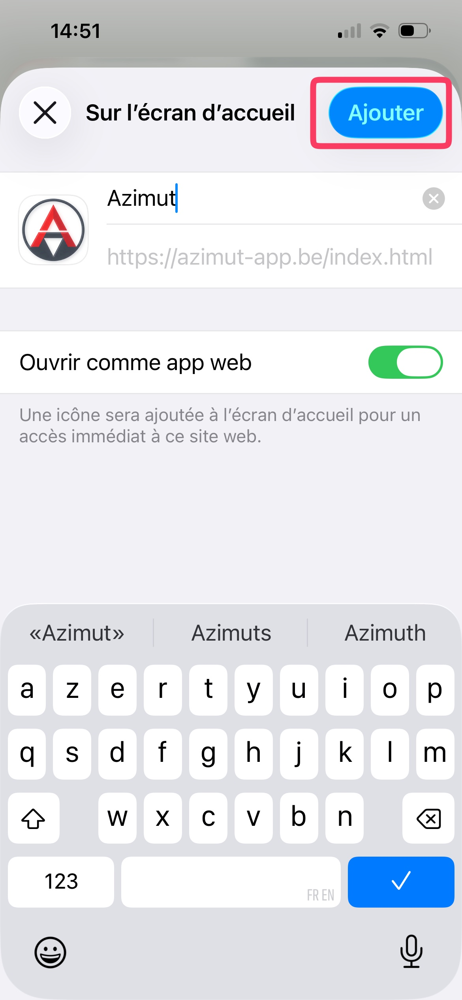
C'est fait ! L'icône est maintenant sur votre écran avec vos autres applications.
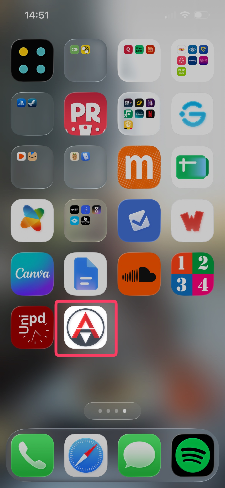
Une prise en main simple et rapide, étape par étape, pour ne plus jamais rater une information importante concernant vos animés.
Lors de votre toute première visite, rendez-vous sur l'onglet Rejoindre. Sélectionnez l'unité et la section de votre enfant. Le système vous demandera alors le Code secret parent (fourni par les animateurs en début d'année) pour garantir la sécurité du groupe. Entrez votre e-mail, choisissez un mot de passe, et le tour est joué !
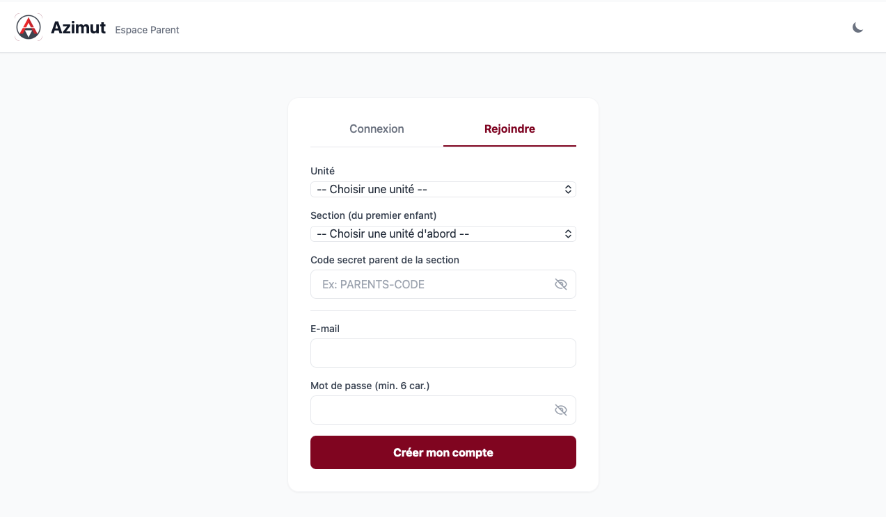
Pour vos visites suivantes, utilisez simplement l'onglet Connexion. Entrez votre e-mail et votre mot de passe pour accéder directement à votre espace personnel. Un trou de mémoire ? Le lien "Mot de passe oublié ?" vous permet de réinitialiser votre accès en toute autonomie via votre boîte mail.
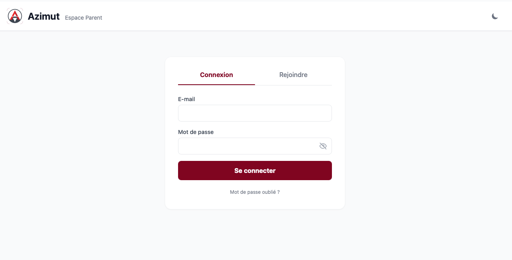
Bienvenue sur votre espace personnel ! C'est ici que tout se passe. L'interface est divisée en quatre outils simples pour vous faire gagner du temps :
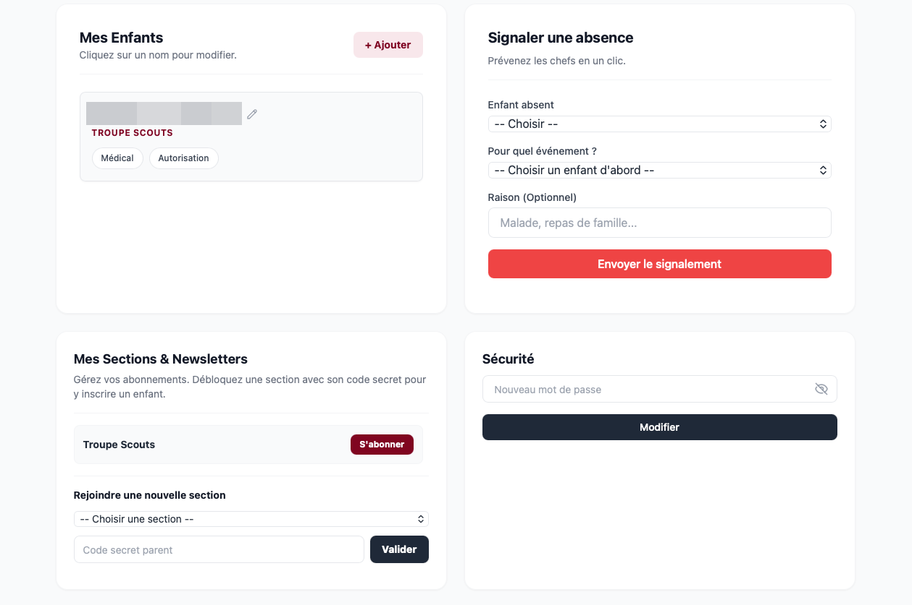
Fini de chercher le numéro d'un chef à la dernière minute. Utilisez le module Contacter le Staff : choisissez l'animateur concerné dans le menu déroulant, tapez votre message, et il sera envoyé directement sous forme d'e-mail officiel. Pratique pour les petites questions logistiques ou les retards !
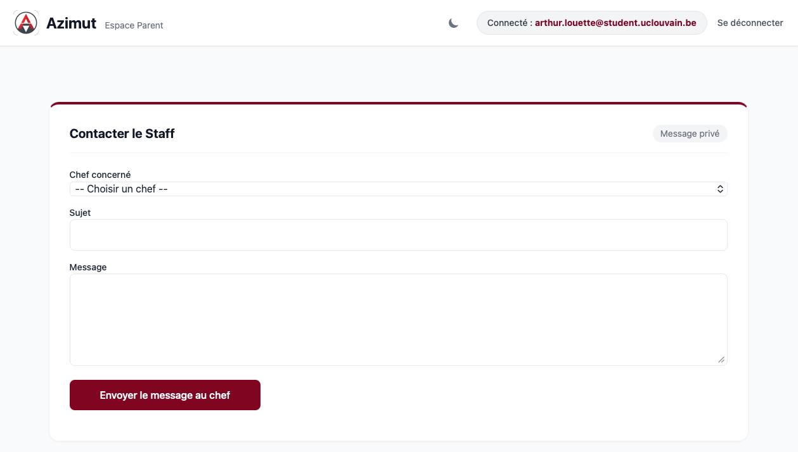
Le Calendrier affiche tous les événements à venir encodés par les chefs. Mieux encore : grâce au module Signaler une absence, vous sélectionnez votre enfant, l'événement concerné, un motif, et les staffs sont prévenus instantanément dans leur tableau de bord. N'oubliez pas le bouton Exporter (.ics) pour synchroniser toutes les dates avec l'agenda de votre téléphone !
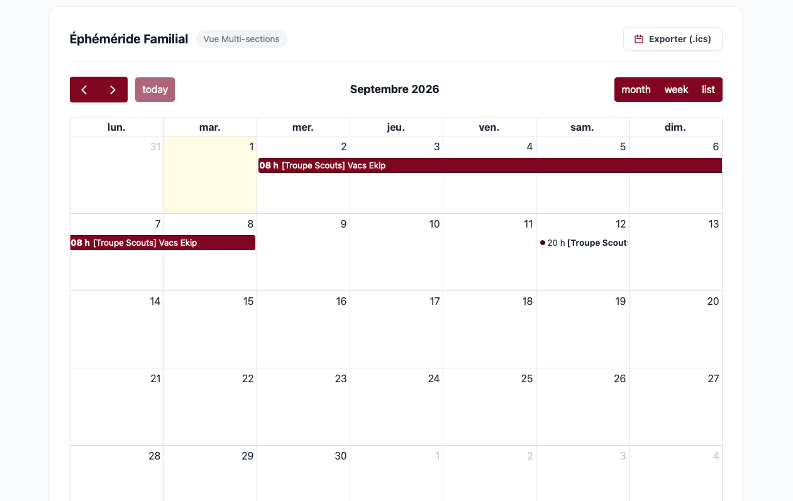
Découvrez comment Azimut va vous faire gagner des heures de préparation et simplifier la communication de votre section.
Rendez-vous dans l'onglet Nouveau Chef. Sélectionnez votre unité et votre section. Pour des raisons de sécurité, vous devrez entrer le Code secret staff (remis par votre chef d'unité ou l'admin d'Azimut !) pour prouver que vous faites bien partie du staff. Encodez ensuite votre prénom, nom, totem et e-mail pour finaliser la création.
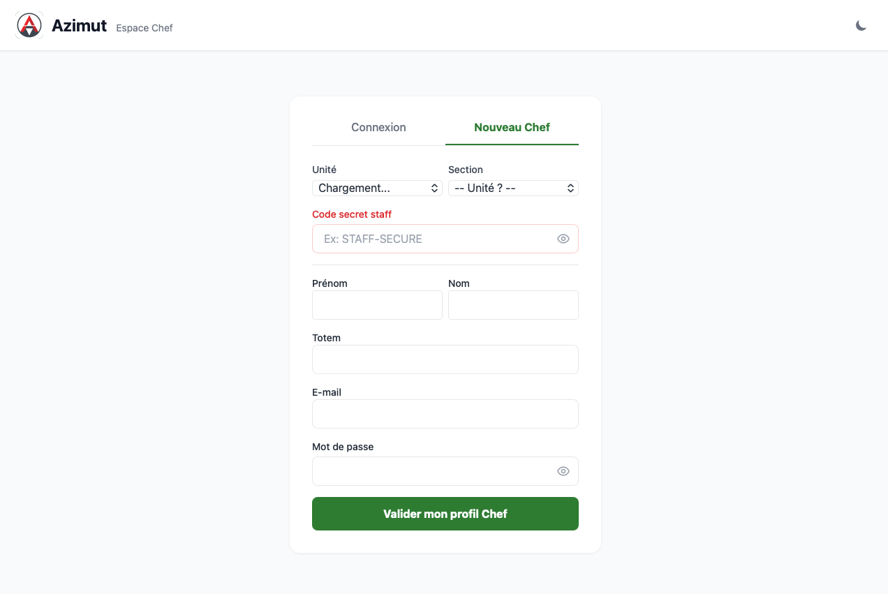
Une fois le compte créé, passez par l'onglet Connexion. Votre e-mail et votre mot de passe vous donneront un accès direct et sécurisé aux données de votre propre section. Les données des autres sections de l'unité restent strictement invisibles pour vous.
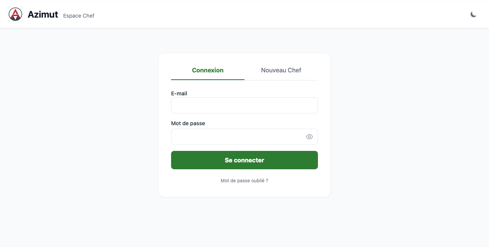
C'est le centre de contrôle de votre section. En haut, visualisez immédiatement les absences signalées par les parents pour la prochaine réunion. En bas, le Calendrier vous permet d'ajouter les réunions, les hikes et les camps en un clic. Dès qu'un événement est ajouté, il apparaît instantanément sur l'espace de tous les parents !
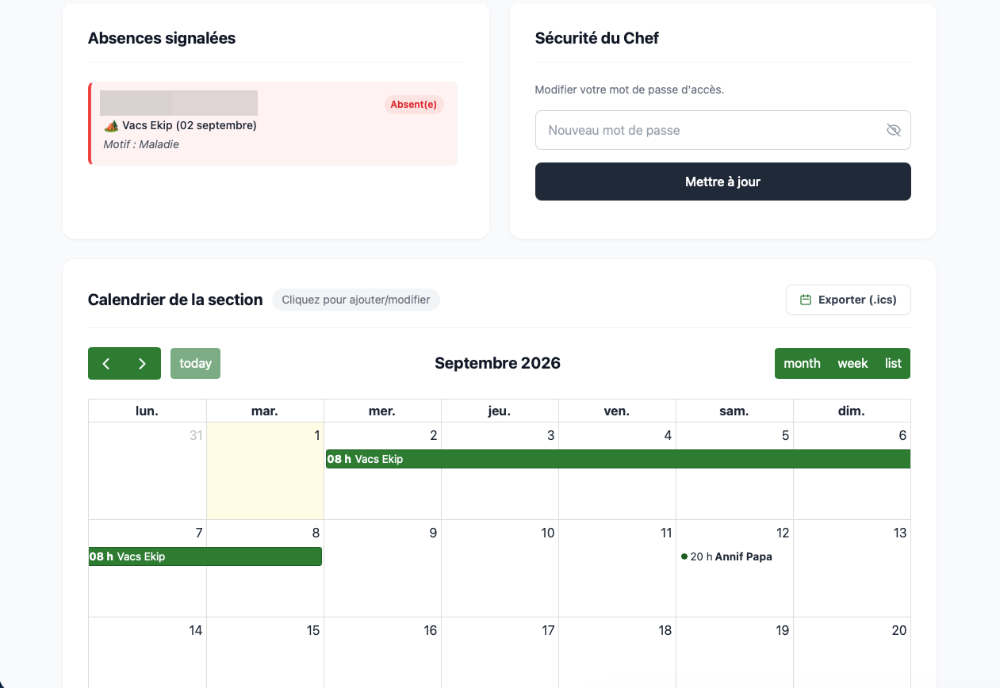
Fini les fiches papier perdues ! L'Annuaire liste tous vos animés. Vous voyez d'un coup d'œil les allergies, les soins requis, et pouvez ouvrir les autorisations parentales PDF. Juste en dessous, le Tableau de Bord Analytique génère des graphiques automatiques pour repérer facilement les animés souvent absents ou les réunions qui ont eu moins de succès.
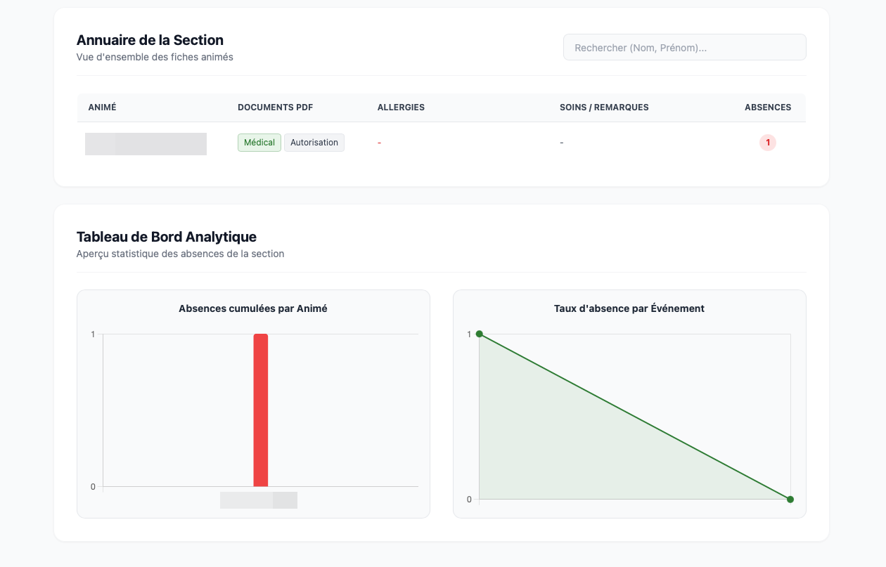
Besoin d'envoyer la convocation pour le prochain grand camp ? Le module Newsletter Générale envoie un e-mail propre et professionnel à l'ensemble des parents abonnés à votre section. Vous pouvez même y glisser une pièce jointe. Fini de maintenir des listes d'adresses Excel à jour manuellement !
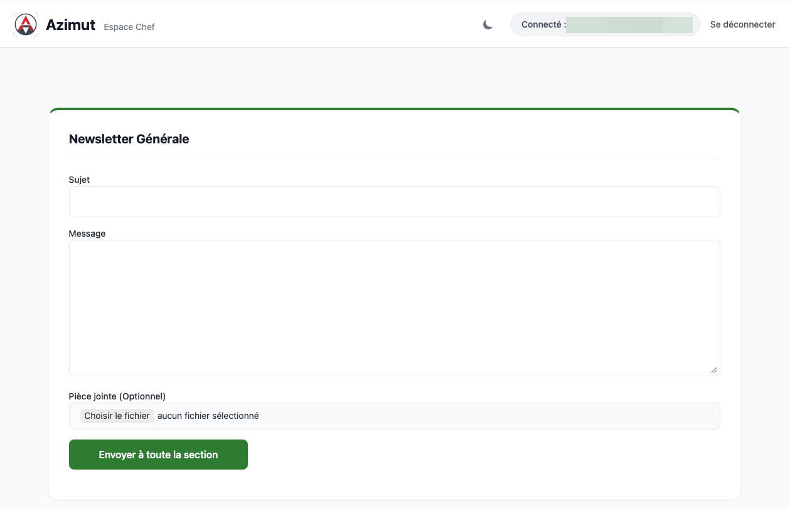
Un pull oublié au local ? Une question spécifique concernant un animé ? Le module Contacter un parent vous permet de sélectionner l'enfant concerné dans la liste déroulante et de rédiger un message privé. Le parent le recevra par e-mail et pourra y répondre directement.
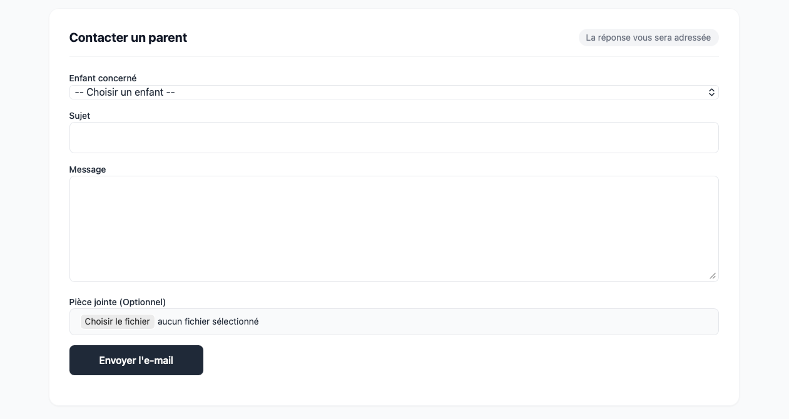
La vue "hélicoptère" ultime pour gérer l'association, superviser les effectifs et communiquer d'une seule voix.
Pour accéder au sommet de la pyramide, rendez-vous sur l'onglet Nouveau Chef d'Unité. Renseignez votre unité et insérez le très précieux Code Secret d'Unité (le code maître généré lors du déploiement d'Azimut). Créez ensuite votre profil avec votre adresse e-mail personnelle pour obtenir vos droits globaux.
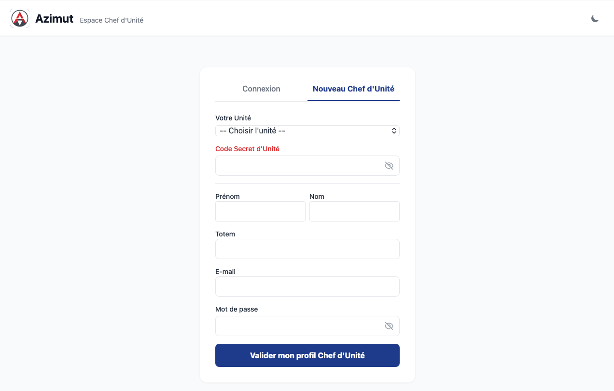
Une fois le profil créé, passez par l'onglet Connexion standard. Contrairement aux animateurs classiques qui sont restreints à leur propre section, le système reconnaîtra automatiquement vos droits "Superadmin" et vous redirigera vers le Tableau de Bord global de l'Unité.
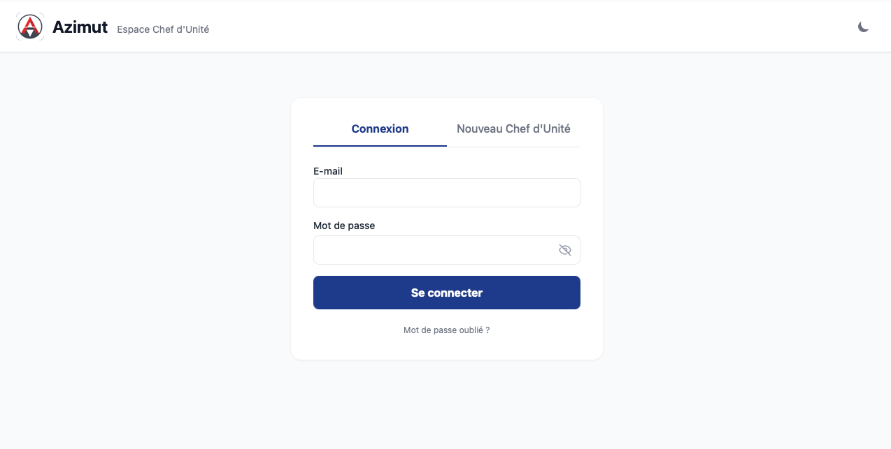
L'outil idéal pour les réunions de staff d'unité ! L'Annuaire Global vous permet de retrouver n'importe quel parent ou chef, en filtrant par rôle ou par section. Juste en dessous, l'Éphéméride de l'Unité superpose les événements de toutes les sections avec un code couleur. En un coup d'œil, vous savez qui est en hike ou qui fait réunion au local ce week-end.
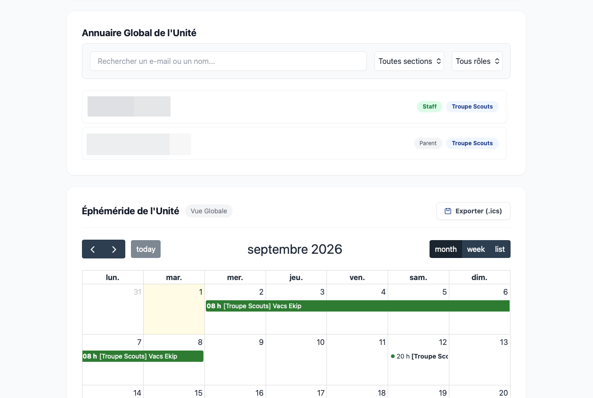
Une annonce pour la Fête d'Unité ? Une urgence logistique ? Le module Communiqué à l'Unité Entière est votre mégaphone. Rédigez votre message, ajoutez une pièce jointe, et cliquez sur envoyer. Azimut se charge de distribuer l'e-mail à absolument tous les parents et tous les chefs enregistrés sur la plateforme, sans que vous n'ayez à gérer la moindre liste d'adresses.
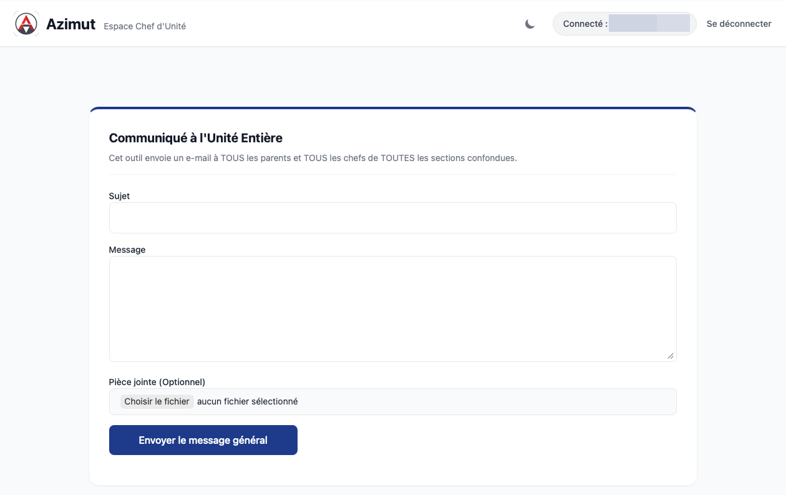
Fin août, il est temps de préparer la nouvelle année. La Zone de Danger vous permet de déclencher la clôture de l'année scoute d'un seul clic. Cette action réinitialise les calendriers, vide les historiques d'absences, désabonne tout le monde des newsletters et révoque l'accès des anciens chefs. Les profils des enfants et les fichiers PDF, eux, restent intacts pour faciliter la réinscription !
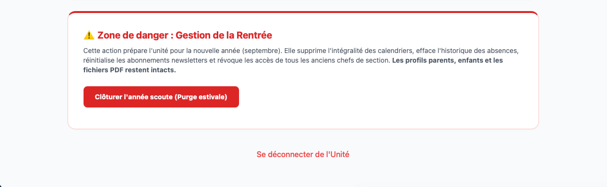